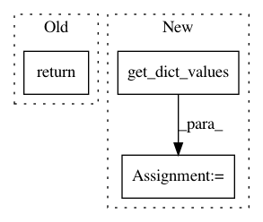

0c81011805c9ab4d6f7f314f674d39e51f5ba8eb,Tars/losses/gan_loss.py,GANLoss,estimate,#GANLoss#Any#Any#,26
Before Change
sample_data = get_dict_values(sample_data_dict, self.d.var)[0]
return self.d_criterion(sample_data, sample) // TODO: detach
return self.g_criterion(sample)
@staticmethod
def d_criterion(sample_data, sample):
return - torch.log(sample_data) - torch.log(1 - sample)
After Change
// sample y from x
y_dict = self.d.sample(x_dict)
y = get_dict_values(y_dict, self.d.var)[0]
return self.bce_loss(y, t_data)
def train(self, train_x, **kwargs):
In pattern: SUPERPATTERN
Frequency: 3
Non-data size: 3
Instances
Project Name: masa-su/pixyz
Commit Name: 0c81011805c9ab4d6f7f314f674d39e51f5ba8eb
Time: 2018-10-30
Author: masa@weblab.t.u-tokyo.ac.jp
File Name: Tars/losses/gan_loss.py
Class Name: GANLoss
Method Name: estimate
Project Name: masa-su/pixyz
Commit Name: 9651b0721f5267790109a62b5c8b13364b4d17eb
Time: 2020-08-03
Author: kaneko@weblab.t.u-tokyo.ac.jp
File Name: pixyz/distributions/distributions.py
Class Name: Factor
Method Name: sample
Project Name: masa-su/pixyz
Commit Name: aab1e5b638029c3398d7fb557abbecee51abf53a
Time: 2018-10-23
Author: masa@weblab.t.u-tokyo.ac.jp
File Name: Tars/distributions/distributions.py
Class Name: RelaxedBernoulli
Method Name: log_likelihood